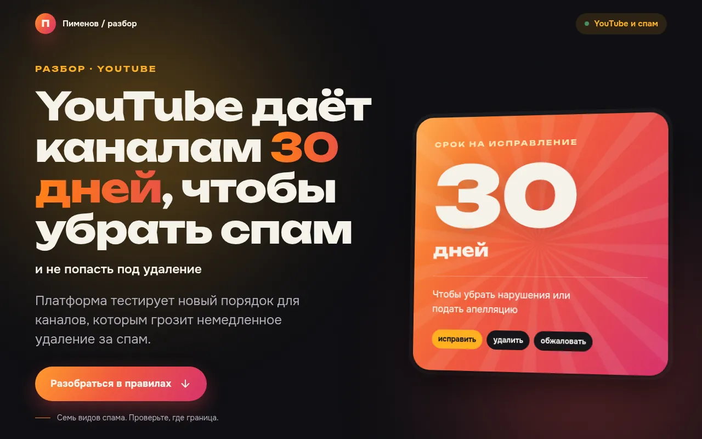

lab.pimenov.ai/stepan-live

ДЕМО 01 · CODEX
Живой сайт из поста примерно за 10 минут
СаркисСтепан
Основой стал пост о том, что YouTube даёт каналам 30 дней на то, чтобы убрать спам. По нему Степан прямо в эфире собрал интерактивный сайт.
- Саркис взял задачу в чате «Вебинар» и передал её Степану через командную строку (CLI).
- Степан, Codex на Mac Mini, сам написал код и сам его проверил.
- Сайт опубликован на lab.pimenov.ai примерно через 10 минут.